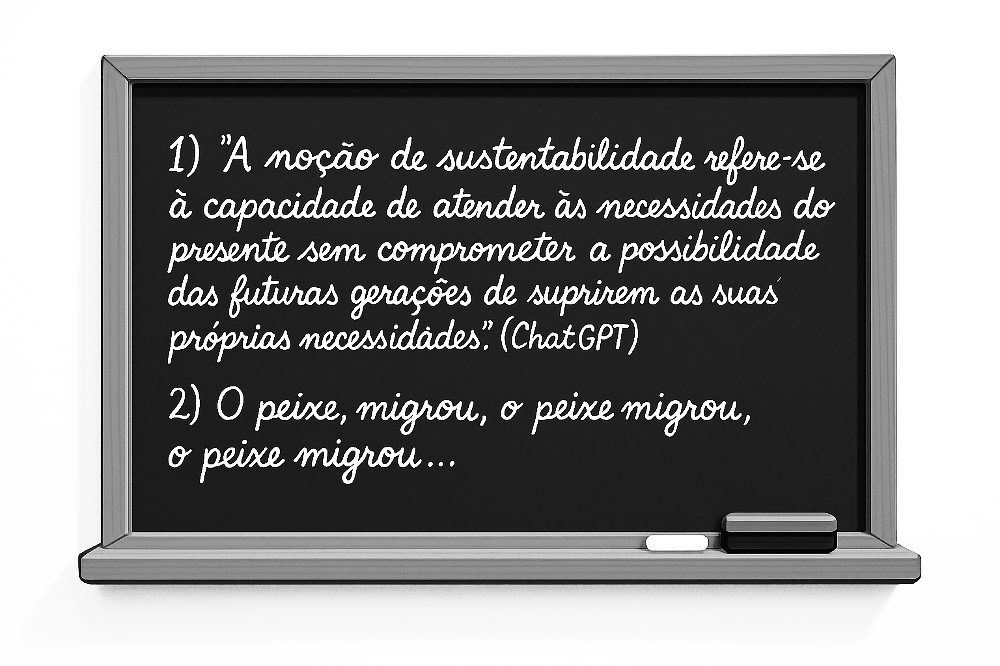
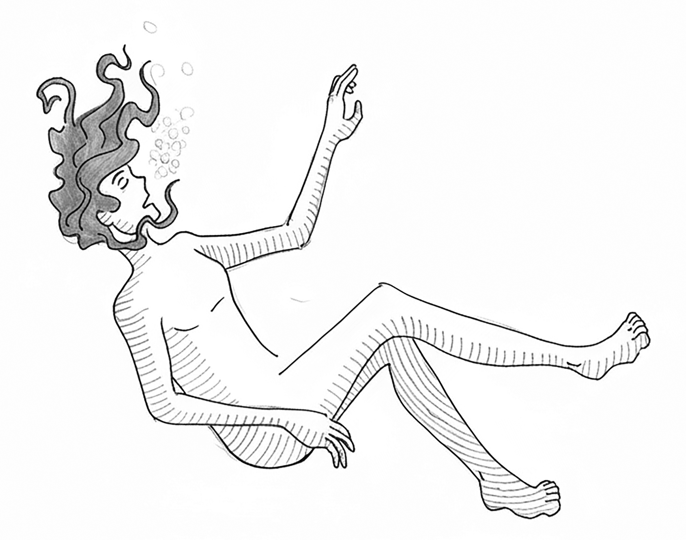
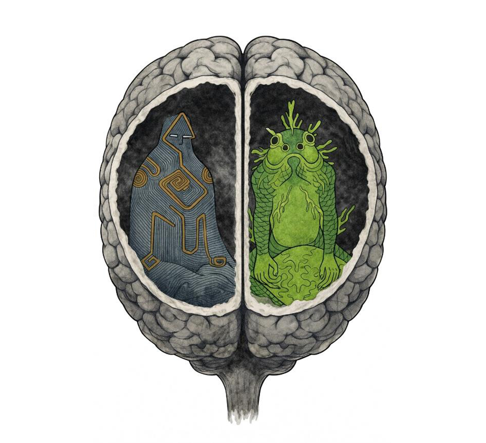
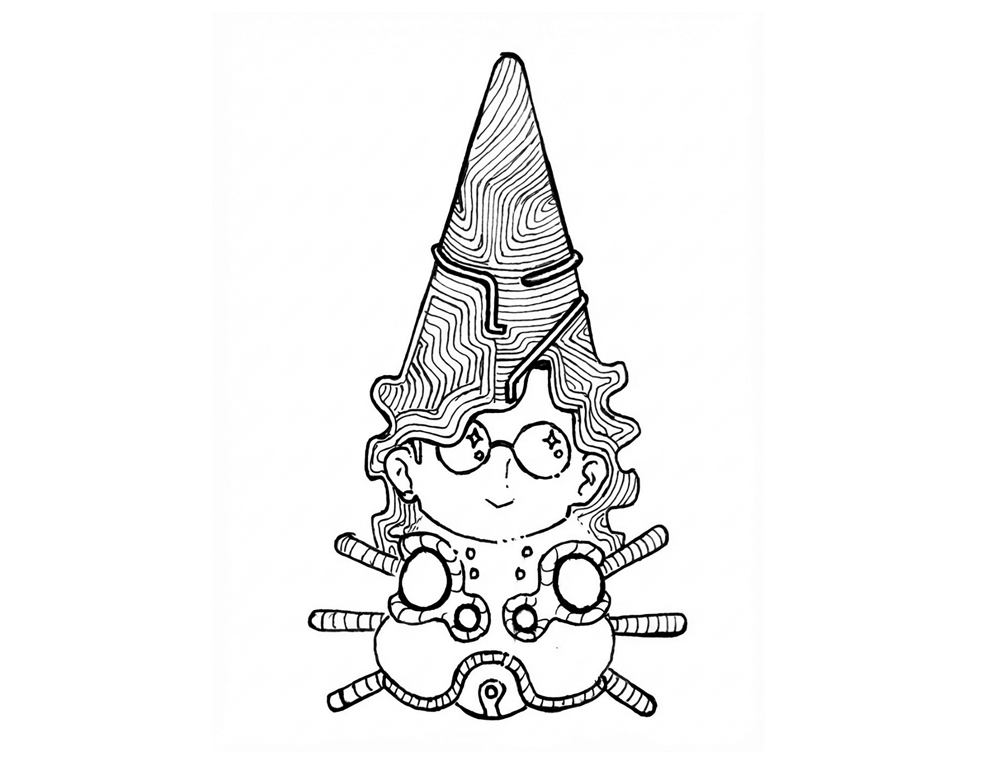

— Bom dia, meus lindinhos e lindinhas! Hoje vamos retomar a temática sobre meio ambiente e cidades — informou Rita, entusiasmada. — Como vocês devem se lembrar, naquela aula discutimos a ideia de meio ambiente, sendo as cidades uma de suas partes, certo?
— Hoje, continuaremos a falar sobre esse tema, porém dando maior ênfase à noção de sustentabilidade. Peguem seus cadernos e copiem os pontos que vou colocar na lousa. E não se esqueçam de duas coisas muito importantes: primeiro, que vou dar nota pela organização do caderno de vocês; segundo, que tudo o que eu coloco no quadro, de um jeito ou de outro, cai na prova.
Rita começou a escrever:

Concentrada na lousa, Rita não percebeu que escrevia repetidamente a frase: “o peixe migrou”. Mesmo confusos, os alunos continuaram a copiar, julgando se tratar de alguma estratégia da professora como parte de uma atividade que proporia mais adiante.
Quando Rita se afastou da lousa e percebeu as frases estranhas que havia escrito, apanhou imediatamente o apagador e as apagou por completo.
— Viu como ela apagou rápido? Bora copiar a frase que ela apagou... Acho que ela vai fazer um teste com a gente. Quem se lembrar, vai se dar bem! — mexericou um aluno.
Ainda atordoada, Rita retomou a aula e tentou explicar o ponto:
— Pessoal, para começarmos essa discussão, precisamos entender que a palavra sustentabilidade aponta para um dos maiores desafios de toda a história da humanidade.
— Por essa razão — prosseguiu Rita —, o peixe migrou, o peixe migrou.
Assustada ao escutar a própria voz repetindo aquela estranha frase, Rita se retirou da sala, deixando a turma em completo suspense.
— Gente?! Tá na cara que isso será uma atividade valendo nota! — prenunciou uma aluna.
— Mas esse negócio de "o peixe migrou" tá muito doidera, vocês não acham? — comentou outro aluno com um sorriso enviesado.
— Muito simples, é só achar a Rita e perguntar pra ela, dhôrr... — sugeriu uma aluna, tirando sarro dos colegas.
— Nada a ver! Não viu como ela deixou a sala correndo, assim que disse aquela coisa estranha: “o peixe migrou”? Se ela quisesse explicar ou dar alguma dica pra gente, teria ficado, não é mesmo? — retrucou o colega.
— Bora colocar essa frase no Google — sugeriu outra aluna.
— Gente, encontrei um montão de sites que falam sobre espécies de peixes migratórios, reprodução, mudanças de habitat... essas coisas de peixe — anunciou uma delas.
— Já sei! — refletiu a aluna Gisely. — A professora não está discutindo com a gente sobre meio ambiente, cidades e migrações? Então, tá na cara!
— Tá na cara o quê? Não entendi nada.
— É muito simples! Ela quer que a gente compare a migração de pessoas para as cidades com a migração dos peixes. Não foi ela mesma quem disse que as cidades também fazem parte do meio ambiente? Então, é só pensar: pessoas, peixes, migração, meio ambiente... é tudo a mesma coisa, só muda o habitat!
— Arrasou, Gisely! Você é cabeção mesmo! — parabenizou Amanda.
Naquela tarde, Rita não retornou para o seu apartamento. Foi até a casa de Ana Júlia, sua melhor amiga e colega de faculdade.
— Oi, amiga. Preciso muito falar com você.
— O que é que está pegando?!
— Cê não vai acreditar. Hoje, bem no meio de uma aula com a turma de Ciências da Natureza, assim, do nada, comecei a escrever no quadro umas frases sem sentido. Quando percebi, apaguei correndo.
— Que frase foi essa, amiga?
— Era alguma coisa do tipo “o peixe migrou”. Muito doido, né? E não parou por aí — prosseguiu Rita. — Quando fui explicar o ponto pra eles, comecei a repetir a mesma frase. Daí, quando percebi que tinha repetido aquilo, simplesmente deixei a sala e fui embora. Nem sei o que a turma ficou pensando de mim... Será que isso é algum sinal de esquizofrenia?
— Você quis dizer “doida”? Claro que não, amiga! Você só está com um baita estresse. Mal acabou de se formar, teve que encarar os concursos, morar sozinha... uma barra, né? — tentou reconfortar Ana Júlia.
— Talvez você esteja certa. Tem sido mesmo uma barra...
— Sei de um ótimo remédio pra esse seu estresse.
— Qual?
— Vamos dar um giro pela night, conhecer pessoas, desestressar um pouco!
Rita passou o resto da tarde e boa parte da noite com a amiga, relembrando os tempos da faculdade e dando boas risadas.
Durante a madrugada, porém, teve um pesadelo horrendo: alguém à deriva, em um pequeno bote, no meio do oceano, completamente só, numa noite escura, sem luar.
O vento, incessante e gélido, borrifava a água sobre seu corpo exausto. Para evitar a visão aterrorizante que a imensidão do mar lhe causava, fixou o olhar no firmamento. Por horas, fitou as estrelas, rogando por um milagre. Suas mãos, adormecidas pelo frio, já não conseguiam se firmar nas alças laterais da pequena embarcação.
De repente, sentiu a proa do bote se erguer violentamente, arremessando-o contra o oceano. Com as forças que ainda lhe restavam, tentou voltar à superfície. Naquele mesmo instante, sentiu-se abraçado. Um ser, meio gente, meio peixe, o agarrou e o conduziu, velozmente, para as profundezas. Quando já lhe faltava o ar nos pulmões, ouviu aquele ser exclamar, em tom rugoso:
— O peixe migrou!

E antes mesmo que o sol despontasse no horizonte, Rita já havia coado seu cafezinho matinal. Com os cabelos torcidos sobre a nuca e presos por um lápis, sentou-se ao lado da janela da sala. Xícara de café em uma mão e celular na outra, filmou, admirada, o espetáculo luminoso causado pelos raios do sol refletindo nas vidraças dos prédios vizinhos.
Subitamente, o pesadelo recomeça. O mesmo ser anfíbio, com uma das mãos, agarra o náufrago — já sem vida — e o arrasta pelas profundezas do oceano. Está escuro e muito frio. Mas... para onde o estaria levando? Talvez para devorá-lo, com segurança, em algum abrigo rochoso. Ou, ao contrário, por considerá-lo um intruso indesejado, estaria apenas levando-o para longe de seus domínios. Vai saber...
Mas, espere! Se Rita está ao lado da janela, admirando a paisagem enquanto bebe seu café, quem, neste caso, estaria tendo este pesadelo?
— Não lhe parece óbvio demais, meu caro observador intergaláctico? — disse uma voz, com o mesmo tom rugoso
— Quem é você? Como conseguiu entrar na minha mente? Foram os meus superiores que o implantaram em mim? Eu não dei essa permissão. Isso pode arruinar a minha missão. Portanto, exijo que abandone a minha mente imediatamente! — impus.
— Acalme-se, visitante. Deixe que eu me apresente. Me chamo Anagonno. Bem... esse foi o nome que alguns terráqueos, carinhosamente, me deram quando cheguei a este doce planeta, há alguns milênios. — revelou.
— Agora, sobre a sua segunda pergunta, eu explico: sabe aquele garoto que se afogou... como é mesmo o nome dele? Ah, sim, me lembrei, Rodésio. Entrei na mente dele no momento em que perdeu a consciência, uma prática que você domina muito bem, não é mesmo? Eu sempre faço isso dentro do meu domínio aquático. É divertido! Entro numa mente aqui, em outra ali... é como pegar caronas, entende? — explicou em tom irônico.
— Sobre como entrou na mente do garoto, tudo bem, já entendi. Mas... e quanto à minha mente? Como entrou nela?
— Isso foi interessante. Numa daquelas aulas enfadonhas da professora Rita, enquanto coabitava a mente de Rodésio, percebi sua energia vindo do interior da professora. Então, segui a trilha deixada pelo seu plasma de energia e cá estou... ou melhor, cá estamos.
— Por que deixou a mente do garoto e migrou para a minha?
— Pura curiosidade. Senti que sua energia era completamente diferente. Um tipo de vibração que eu ainda não havia experimentado entre os humanos.
— Agora que já experimentou a minha “energia”, senhor Anagonno, que tal deixar a minha mente, para que eu possa continuar com a minha missão?
— É aí que reside todo o problema...
— Como assim?! Poderia ser mais claro?
— O fato é que, ao entrar em sua mente, tomei conhecimento de sua magnífica missão. Então, disse para mim mesmo: Essa também será a minha missão!
— Nada disso! Essa missão é só minha. Procure uma para você.
— Não seja egoísta, meu caro viajante. Pense em como poderemos nos ajudar mutuamente. Você entra com todo o seu planejamento, e eu, com toda a minha experiência. Afinal, já estou neste planeta há um bom tempo... Praticamente, testemunhei toda a jornada tecnológica dos humanos.
— E olhe que já presenciei coisas entre eles que até Poseidon duvidaria, se eu contasse.
— Última chance. Saia agora da minha mente, ou...

— Ou o quê? Vai me expulsar espirrando? Você sabe muito bem que só há um meio de me expulsar. Isso mesmo: ocasionando uma descarga eletromagnética muito forte, forte o bastante para causar a morte cerebral da sua professora.
— E o meu palpite é que assassinar humanos não faz parte do protocolo de sua missão. Estou errado?
— Está me testando, senhor Anagonno?
— Sim! Manda vê. Frite o cérebro dela.
— Não posso...
— Eu sabia! Bem, agora que somos parceiros de missão, poderia, pelo menos, dizer o seu nome?
— Na minha língua-mãe, me chamo , mas pode me chamar de Koz. Sou ecólogo intergaláctico, e o planeta ,ou Terra, como vocês o chamam, faz parte de nossa jurisdição.
— Muito prazer, senhor Koz. Para mim, é uma honra poder participar de vossa missão. Contudo, gostaria que me esclarecesse uma questão: você e seus superiores perceberam que os humanos estão encerrados numa espécie de “matrix” que eles próprios construíram para si, a qual vocês denominaram de paradoxo socioambiental, ou seja, quanto mais os humanos aprofundam seus conhecimentos acerca da ecologia da Terra, mais investem em modelos de vida que destroem seus sistemas ecológicos, causando, assim, sua autodestruição. Certo?
— Isso mesmo, senhor Anagonno.
— Mas, há uma questão nesta missão que me intriga.
— Que questão?
— Por que razão escolheu invadir um sistema de educação para compreender tal paradoxo, em vez de invadir, por exemplo, um centro de poder qualquer, a partir do qual os humanos tomam suas decisões?
— Pela seguinte razão: atuamos no mundo com base nos conhecimentos que acumulamos ao longo de nossa longa jornada de aprendizagem. E com os humanos não é diferente, suas escolas representam a base formadora dos conhecimentos com os quais atuam no mundo.
— Neste caso, o nobre ecólogo intergaláctico está tentando me dizer que acredita no sistema de educação dos humanos, ou melhor, acredita que, por meio da educação, os humanos poderão impedir sua autodestruição. É isso?
— Sim! Acredito. E você, senhor Anagonno, não acredita na educação dos humanos?
— Veja, senhor Koz, para um sujeito como eu, que acompanhou todas as pequenas e grandes realizações humanas, assim como todas as suas escolhas malsucedidas, é natural que eu não seja tão otimista quanto você. Entende o que eu digo?
— Bem, senhor Anagonno, se não acredita que os humanos sejam capazes de superar tal paradoxo, por que ainda não abandonou este planeta e voltou para o seu mundo?
— Por uma razão muito simples, meu caro Koz. Este planeta também é a minha casa. Chegamos aqui muito antes de os humanos se desenvolverem tecnologicamente. Aprendemos a habitar a imensidão dos oceanos. Não interferimos em nenhum de seus ecossistemas, não poluímos, nem causamos extermínios premeditados como fazem os humanos. Então, ainda acha que não merecemos esta morada?
— Nesse sentido, sou obrigado a concordar. Eu diria até que vocês são como uma espécie de peixe a mais no oceano, não é mesmo?
— Embora não concorde com essa sua maneira simplificadora de me descrever, algo muito parecido com a forma como a ciência humana costuma representar o mundo, devo admitir que sim, me considero apenas mais um ser vivente neste planeta. Agora, sugiro que deixemos a conversa de lado e nos concentremos em nossa missão, parceiro.
